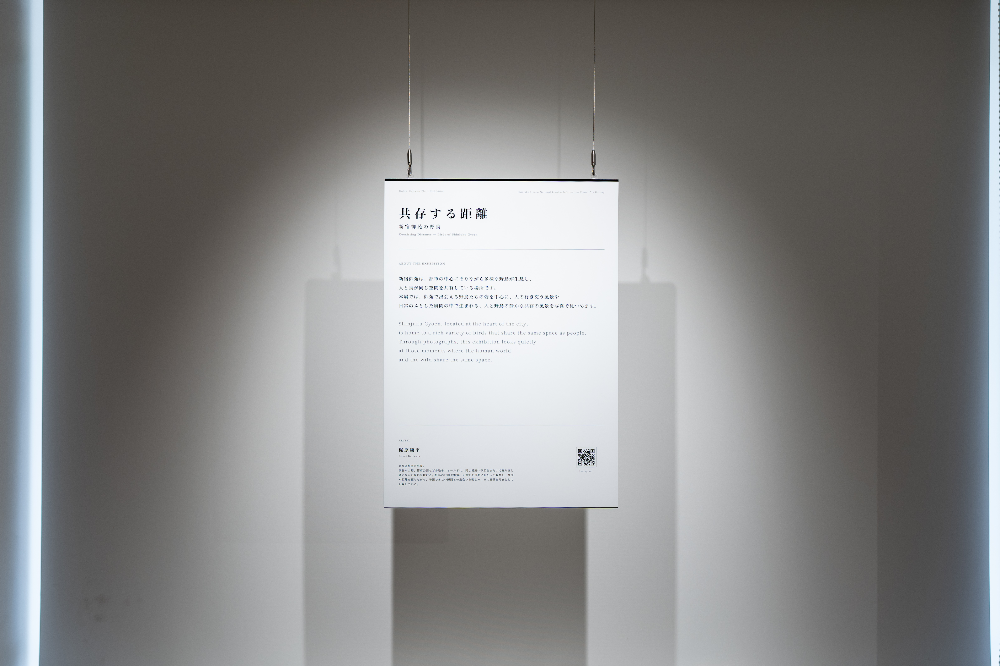

About
新宿御苑は、都市の中心にありながら多様な野鳥が生息し、人と鳥が同じ空間を共有している場所です。本展では、御苑で出会える野鳥たちの姿を中心に、人の行き交う風景や日常のふとした瞬間の中で生まれる、人と野鳥の静かな共存の風景を写真で見つめます。
Shinjuku Gyoen, located at the heart of the city, is home to a rich variety of birds that share the same space as people. Through photographs, this exhibition looks quietly at those moments where the human world and the wild share the same space.
展示概要
| 会期 | 2026年6月9日（火）〜 6月21日（日） |
|---|---|
| 時間 | 9:00〜18:00 |
| 会場 | 新宿御苑インフォメーションセンター アートギャラリー |
| 入場料 | 無料（別途入園料が必要） |
Works

No.1
ジョウビタキ（メス）
Daurian Redstart
生態：休息
場所：森の家
撮影：2026年1月

No.2
ジョウビタキ（メス）
Daurian Redstart
生態：休息
場所：森の家
撮影：2026年1月

No.3
ジョウビタキ（メス）
Daurian Redstart
生態：水飲み
場所：森の家
撮影：2026年1月

No.4
ウソ（オス）
Eurasian Bullfinch
生態：水浴び・水飲み
場所：森の家
撮影：2026年1月

No.5
ジョウビタキ（オス）
Daurian Redstart
生態：休息
場所：母と子の森
撮影：2026年2月

No.6
ルリビタキ（オス）
Red-flanked Bluetail
生態：採餌
場所：母と子の森
撮影：2026年2月

No.7
ハクセキレイ
White Wagtail
生態：採餌
場所：風景式庭園
撮影：2026年5月

No.8
シジュウカラ
Japanese Tit
生態：育雛
場所：母と子の森
撮影：2026年5月

No.9
シジュウカラ
Japanese Tit
生態：育雛
場所：母と子の森
撮影：2026年5月
関連イベント
撮影地巡りウォーク
展示写真の撮影場所を一緒に歩きながら、実際に野鳥を探すフィールドイベントです。
日時：6月14日（土）・6月21日（日）各回 10:00〜11:30（予定）
定員：各回6名（先着順・無料／別途入園料が必要）
展示の様子




「共存する距離」を終えて
2026年6月、新宿御苑インフォメーションセンターにて写真展「共存する距離」を開催しました。
新宿御苑は、都市の中心にありながら多様な野鳥が暮らし、多くの人が訪れる場所です。私はこれまで御苑に通い続ける中で、鳥だけでなく、人と野鳥が同じ空間を共有することで生まれる距離感や関係性に強く惹かれてきました。
本展では、そのような風景を写真という形でまとめることを試みました。
展示を終えて感じているのは、テーマとして掲げた「共存する距離」には、まだ多くの可能性が残されているということです。
今回の展示では、人と鳥との関係性や、その場に流れる空気感を表現しようとしました。しかし、作品の中には物語性の強いものも多く、写真だけで十分に伝え切れなかった部分もあったと感じています。作品単体の完成度だけでなく、展示全体としての構成や深みについても課題が残りました。
一方で、来場者の方々との対話を通じて、自分が関心を持っているものがより明確になりました。
それは野鳥そのものだけではなく、人と自然が同じ空間を共有することで生まれる関係性です。そして、その関係性の中にある言葉にならない余白を写真として残したいという思いは、今回の展示を通してより強くなりました。
今回の写真展は、一つの到達点であると同時に、新たな出発点でもあります。
これからも新宿御苑に通い続けながら、「共存する距離」というテーマをさらに深めていきたいと思います。そしていつか、再び同じ場所で、このテーマによる新たな展示を開催できればと考えています。
ご来場いただいた皆さま、作品を通じて関わってくださった皆さま、そして本展の開催にあたり温かくご協力いただいた新宿御苑インフォメーションセンターのスタッフの皆さまに、心より感謝申し上げます。
作家プロフィール
梶原康平
北海道根室市出身。渓谷や山野、都市公園など各地をフィールドに、同じ場所へ季節をまたいで繰り返し通いながら撮影を続ける。野鳥の行動や繁殖、子育てを長期にわたって観察し、構図や距離を探りながら、自然の側に決定権を委ねる制作を続けている。